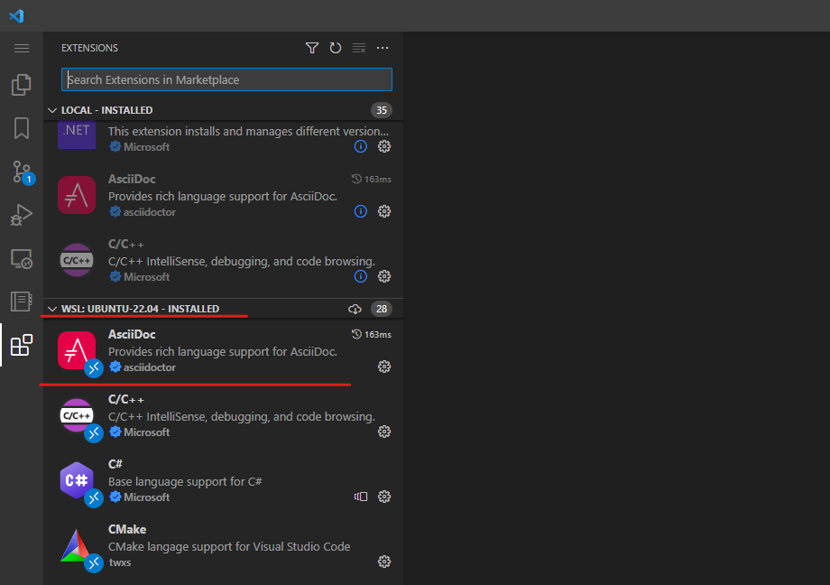

はじめに
本文書は Asciidoc とその Ruby による実装である Asciidoctor を用いて Asciidoc 文書を執筆する環境を構築するガイドです。実行環境は macOS、Linux、Windows の各 OS に対応しています。
この文書の手順から次のことができるようになります。
- Asciidoc 形式で執筆した文書を HTML/PDF 形式に変換
-
Asciidoc 文書変換用 Gradle ビルドの実行
- テキストエディターで変換結果をリアルタイムにプレビューしながら文書を編集
-
Visual Studio Code と AsciiDoc 拡張の設定
Asciidoc は表現力の高い文書をテキストファイルベースで執筆できる軽量なマークアップ言語です。他の軽量テキストマークアップが持たない文書間のインクルードやソースコードの挿入などの機能も有し、かつ簡潔です。特に技術文書の執筆には大きな力を発揮することでしょう。
|
Asciidoc の表現力を示すひとつの例は、このような脚注表現です。 |
一般的にテキストプロセッサーを用いた執筆とパブリッシング環境を整えるには多くの準備が必要ですが、本文書の手順は極力初期導入するプロダクトを少なく、簡単に快適な執筆環境を整えられるよう考えられました。
具体的には文書の変換に、実行を JVM 環境だけに依存する AsciidoctorJ と Gradle を活用し、執筆環境については Visual Studio Code を用いることでリアルタイムに文書をプレビューしながら、最後にコマンド一つで HTML/PDF 化できるように準備しました。またさらに、クラウド統合環境である Gitpod や GitHub の Codespaces もサポートし、ウェブブラウザだけでの執筆・変換も実現しています。
手間がかかることが多い PDF 出力に関しても、フォントセットや禁則処理設定をプロジェクトに持たせることにより、実行環境に関わらず同一出力が得られるように調整しました。
Asciidoc による文書の執筆は形式的で効率が良く、また更新差分が取りやすいため、文書履歴管理や共同執筆環境としても有効です。このメリットをさらに活用するため、本文書ではバージョン管理システムの Git やテキストダイアグラム記法による図形や数式のベクター画像挿入をフォローしています。
本文書がみなさんの執筆活動のお手伝いになれば幸いです。
Asciidoc と Asciidoctor について
Asciidoc は人が読み書きしやすいプレーンテキスト文書から、HTML や PDF をはじめとした様々な出版形式に出力が行える軽量のマークアップ言語です。通常のテキストファイルを使った表現と似ていることから習得がしやすく、また出版向きの表現力も兼ね備えています。
About AsciiDoc
AsciiDoc is a lightweight and semantic markup language primarily designed for writing technical documentation. The language can be used to produce a variety of presentation-rich output formats, all from content encoded in a concise, human-readable, plain text format.
Asciidoctor は Ruby でかかれた Asciidoc の実装です。構文木解析や各種出版フォーマットへの変換を実現します。
What is Asciidoctor?
Asciidoctor is a fast, open source, text processor for parsing AsciiDoc into a document model, then converting it to output formats such as HTML 5, DocBook 5, man(ual) pages, PDF, and EPUB 3. Asciidoctor is written in the Ruby programming language.
同プロジェクトにおいて、ウェブブラウザ上で Asciidoc の動作を実現する Asciidoctor.js や、PDF 出力を行う Asciidoctor PDF が提供されています。また、AsciidoctorJ は、Ruby 実装である Asciidoctor を Java でかかれた Ruby 実行環境である JRuby を使って Java VM 上で動作させるプロダクトとなっています。
ライセンス
本文書に含まれる筆者が作成したビルドスクリプト、サンプル文書 .adoc、ダイアグラムのなどのソースは全て MIT License です。ライセンスに従って自由にご利用ください。
リポジトリのソースやライセンスファイルは次から参照できます。
AsciidoctorとGradleでつくる文書執筆環境
|
本文書の PDF 版の表紙は @Fujix さん によって作成されました。 素敵なデザインをありがとうございました。 |
謝辞
本文書の実装であるビルドスクリプトやテーマでは次のプロダクトと技術資料が使われています。
プロダクト名の隣にライセンスを併記しました。商用利用等で制限のあるプロダクトはありませんが、それぞれライセンスを確認してください。
- Font
-
-
源真ゴシック - SIL Open Font License 1.1 - http://jikasei.me/font/genshin/
-
源様明朝 - SIL Open Font License 1.1 - https://github.com/ButTaiwan/genyo-font
-
Ricty Diminished - SIL Open Font License 1.1 - https://github.com/edihbrandon/RictyDiminished
-
Morisawa BIZ UDGothic - SIL Open Font License 1.1 - https://github.com/googlefonts/morisawa-biz-ud-gothic
-
Morisawa BIZ UDMincho - SIL Open Font License 1.1 - https://github.com/googlefonts/morisawa-biz-ud-mincho
-
Open Iconic - MIT License - https://github.com/iconic/open-iconic/
-
- Asciidoc
-
-
Asciidoctor - MIT License - https://asciidoctor.org/
-
Asciidoctorj - Apache License 2.0 - https://github.com/asciidoctor/asciidoctorj
-
Asciidoctor.js - MIT License - https://asciidoctor.org/docs/asciidoctor.js/
-
Asciidoctor PDF - MIT License - https://asciidoctor.org/docs/asciidoctor-pdf/
-
Asciidoctor Gradle Plugin Suite - Apache License 2.0 - https://github.com/asciidoctor/asciidoctor-gradle-plugin
-
asciidoctor-pdf-linewrap-ja - MIT License - https://github.com/fuka/asciidoctor-pdf-linewrap-ja
-
asciidoctor-nabetani - MIT License - https://github.com/nabetani/asciidoctor-nabetani
-
- Diagram
-
-
PlantUML - Multi(MIT/Apache/BSD/EPL/GPLv3/LGPL) - https://github.com/plantuml/plantuml
-
ditaa - LGPL-3.0 license - https://github.com/stathissideris/ditaa
-
- Build Tool
-
-
SDKMAN - Apache License 2.0 - https://sdkman.io/
-
Gradle - Apache License 2.0 - https://gradle.org/
-
- Text Editor
-
-
Visual Studio Code - Microsoft - https://code.visualstudio.com/
-
asciidoctor-vscode - MIT License - https://github.com/asciidoctor/asciidoctor-vscode
-
vscode-paste-image - MIT License - https://github.com/mushanshitiancai/vscode-paste-image
-
vscode-plantuml - MIT License - https://github.com/qjebbs/vscode-plantuml
-
Code Spell Checker - GPL - https://github.com/streetsidesoftware/vscode-spell-checker
-
- Guide
-
-
asciidoctor-pdfでかっこいいPDFを作る - https://qiita.com/kuboaki/items/67774c5ebd41467b83e2
-
素晴らしい成果を公開されているみなさまに感謝します。
1. Asciidoc 文書変換用スクリプトを使う準備
本文書で用いる Asciidoc 文書変換用スクリプトはビルドツールである Gradle を活用しており、実行するためには Java 実行環境が必要です。
お使いのコンピューターのコマンドライン環境（macOS/Linux ではターミナル、Windows では cmd.exe か powershell.exe）で java -version コマンドを入力し、Java 11 以上のバージョンが表示されるようであれば既に環境の準備は整っています。
$ java -version
openjdk 11.0.20.1 2023-08-24
OpenJDK Runtime Environment Temurin-11.0.20.1+1 (build 11.0.20.1+1)
OpenJDK 64-Bit Server VM Temurin-11.0.20.1+1 (build 11.0.20.1+1, mixed mode)C:¥> java -version
openjdk version "11.0.20.1" 2023-08-24
OpenJDK Runtime Environment Temurin-11.0.20.1+1 (build 11.0.20.1+1)
OpenJDK 64-Bit Server VM Temurin-11.0.20.1+1 (build 11.0.20.1+1, mixed mode)| 本文書では Java 11 を用いて解説します。また、ビルド時に僅かに内部処理のワーニングが出力されますが Java 17 でも期待通り動作することを確認しています。Java 21 に関しては周辺ツール対応待ちのステータスです。 |
1.1. Java 実行環境の導入（macOS / Linux）
もし macOS / Linux 環境に Java 実行環境がなければ SDKMAN を利用することで、ターミナルから簡単に導入できます。
SDKMAN! is a tool for managing parallel versions of multiple Software Development Kits on most Unix based systems.
$ curl -s "https://get.sdkman.io" | bash (1)
$ source "$HOME/.sdkman/bin/sdkman-init.sh" (2)
$ sdk list java (3)
================================================================================
Available Java Versions for Linux 64bit
================================================================================
Vendor | Use | Version | Dist | Status | Identifier
--------------------------------------------------------------------------------
Temurin | | 20.0.2 | tem | | 20.0.2-tem
| | 20.0.1 | tem | | 20.0.1-tem
| | 17.0.8 | tem | installed | 17.0.8-tem
| | 17.0.8.1 | tem | | 17.0.8.1-tem
| | 17.0.7 | tem | installed | 17.0.7-tem
| | 17.0.4 | tem | local only | 17.0.4-tem
| | 11.0.20 | tem | | 11.0.20-tem
| >>> | 11.0.20.1 | tem | installed | 11.0.20.1-tem
| | 11.0.19 | tem | installed | 11.0.19-tem
$ sdk install java 11.0.20.1-tem (4)| 1 | SDKMAN を導入します。 |
| 2 | SDKMAN を環境に設定します。 |
| 3 | 導入できる Java のバージョンを一覧します。 |
| 4 | Java 11 系の最新バージョンを指定して Java を導入します。 |
また、この後で実行する Gradle ビルドツールが JAVA_HOME 環境変数に実行環境の Java のパスが設定されていることを期待していますので、利用しているシェル環境に合わせ .bashrc や .zshrc 等で次のように JAVA_HOME を設定します。
$ vi ~/.bashrc (1)
export JAVA_HOME=~/.sdkman/candidates/java/current (2)
$ source ~/.bashrc (3)| 1 | エディタで .bashrc や .zshrc を開きます。 |
| 2 | 本ラインをファイルの最下部に追加し保存終了します。 |
| 3 | 設定を適用します。source コマンドを使わず、ターミナルを再起動する操作でも反映されます。 |
Gradle は JAVA_HOME 環境変数を元に Java の実行環境を探すため、java コマンドを使うための PATH 環境変数は設定しなくてもかまいません。
|
以上で準備完了です。
1.2. Java 実行環境の導入（Windows）
もし Windows 環境に Java 実行環境がなければ AdoptOpenJDK プロジェクトが提供する OpenJDK のバイナリを導入すると良いでしょう。
Java™ is the world’s leading programming language and platform. The code for Java is open source and available at OpenJDK™. AdoptOpenJDK provides prebuilt OpenJDK binaries from a fully open source set of build scripts and infrastructure.
https://adoptopenjdk.net サイトにブラウザでアクセスし、OpenJDK 11 (LTS) - HotSpot を選択した後、zip ファイルをダウンロードしてください。

zip ファイルを任意の場所に展開します。ここでは C:\develop\runtime\openjdk11 に展開したとします。

また、この後で実行する Gradle ビルドツールが JAVA_HOME 環境変数に実行環境の Java のパスが設定されていることを期待していますので、 からユーザー環境変数に JAVA_HOME を追加し、先ほど .zip を展開したパス（C:\develop\runtime\openjdk11 ）を設定します。

Gradle は JAVA_HOME 環境変数を元に Java の実行環境を探すため、java コマンドを使うための PATH 環境変数は設定しなくてもかまいません。
|
以上で準備完了です。
1.2.1. Windows 環境の WSL2 上の Ubuntu を使う
Windows 環境では WSL2 Linux 仮想環境上の Ubuntu 22.04 を使うことでも環境構築が可能です。メインの執筆環境が macOS や Ubuntu の場合に、Windows 上でも WSL2 Ubuntu を使うと各種操作が統一できて便利かもしれません。
WSL2 に Ubuntu 22.04 LTS が導入済みであることを前提に、環境構築手順は次のようになります。
$ sudo apt update
$ sudo apt upgrade
$ sudo apt install language-pack-ja graphviz fontconfig fonts-noto* language-selector-common (1)
$ sudo update-locale LANG=ja_JP.UTF8 (2)
$ echo 'export LANG=ja_JP.UTF-8' >> ~/.bashrc (3)
$ fc-cache -f (4)| 1 | 日本語の言語設定とデフォルトフォント関連の導入。 |
| 2 | 日本語ロケールを追加。 |
| 3 | 起動シェル環境を ja_JP.UTF-8 に設定。 |
| 4 | 念のためフォントキャッシュを更新。 |
| これらの日本語ロケール設定は、後述のダイアログ表記を使う場合に出力される図表内のフォントが正しく配置されるように行っています。 |
次に、通常の Ubuntu の手順と同様に sdkman で Java 環境の導入を行います。
$ curl -s "https://get.sdkman.io" | bash (1)
$ source "$HOME/.sdkman/bin/sdkman-init.sh" (2)
$ sdk install java 11.0.20.1-tem (3)
$ echo 'export JAVA_HOME=~/.sdkman/candidates/java/current' >> ~/.bashrc (4)| 1 | SDKMAN を導入。 |
| 2 | SDKMAN を環境に設定。 |
| 3 | Java 11 系を指定して Java を導入。 |
| 4 | JAVA_HOME を設定。 |
この操作後 LANG と JAVA_HOME 環境変数設定を反映させるため一度シェルを再起動してください。
以上で準備完了です。
| 次項以降 WSL2 Ubuntu 環境を使う場合の手順は、特別な記載がある場合を除き Linux 項を参照して操作してください。 |
2. Asciidoc から HTML/PDF 文書を作成する
2.1. サンプル文書の変換を試す
本項では準備した環境を元に、Asciidoc 文書を HTML/PDF に変換する手順を示します。
変換に使うスクリプトは GitHub のリポジトリに公開されており、HTML/PDF 変換に使うファイル一式と、文書のサンプルとして "この文書" の Asciidoc ファイルが配置されています。
文書変換スクリプトの実行には、前項で導入した Java 上で動作する Gradle ビルドツールが使われ、リポジトリに含まれる gradlew シェルスクリプトを起点として各種設定が自動的に行われ、Asciidoc 文書から HTML/PDF 文書への変換が実行されます。本文書ではこれを、文書のビルドもしくは単純にビルドと呼ぶこととします。
|
|
最初にリポジトリからこれらのファイルの取得を行い、次に Asciidoc 文書を HTML/PDF 変換するためにビルドを実行します。各 OS ごとの代表的な操作は次のようになります。
2.1.1. サンプル文書の変換（macOS / Linux）
ターミナルを起動し curl コマンドでファイルの取得を行い、ファイルの展開とビルドの実行を行います。
$ curl -L -O https://github.com/h1romas4/asciidoctor-gradle-template/archive/main.zip (1)
$ unzip main.zip (2)
$ cd asciidoctor-gradle-template-main (3)
$ ./gradlew docs (4)
BUILD SUCCESSFUL in 1m 13s (5)
2 actionable tasks: 2 executed| 1 | リポジトリのファイルをダウンロードします。 |
| 2 | ダウンロードした .zip ファイルを展開します。 |
| 3 | カレントディレクトリを展開したフォルダの中に移します。フォルダ名は任意のものに変更可能です。本手順ではプロジェクトフォルダと呼称します。 |
| 4 | Gradle のビルドを実行します。初回実行時はビルドに必要なファイルをダウンロードするため少し時間がかかります。次回以降は 1分程度で完了します。 |
| 5 | BUILD SUCCESSFUL が出力されれば文書変換が正常終了しています。 |
2.1.2. サンプル文書の変換（Windows）
ウェブブラウザで URL にアクセスしてファイルの取得を行い、エクスプローラでファイルを展開し、最後にコマンドプロンプトから Gradle タスクを実行します。
|
Windows の場合 .zip ファイルの展開先はマルチバイト文字を含まないパスにしてください。JRuby の制約により変換処理がエラーとなります。また、プロジェクト内部で使うフォルダやファイル名のマルチバイト名も同様です。 |
-
ブラウザを使って
https://github.com/h1romas4/asciidoctor-gradle-template/archive/main.zipにアクセスしリポジトリのファイルを取得します。 -
ダウンロードした .zip ファイルを右クリックし展開します。フォルダ名は任意のものに変更可能です。本手順ではプロジェクトフォルダと呼称します。
-
展開したフォルダ内をエクスプローラーで表示した上で、アドレスバーに
cmd.exeもしくはpowershell.exeと入力し、このフォルダをカレントディレクトリとしてコマンドプロンプトを起動します。
-
.\gradlew.bat docsと入力しビルドを実行します。初回実行時はビルドに必要なファイルをダウンロードするため少し時間がかかります。次回以降は 1分程度で完了します。> .\gradlew docs BUILD SUCCESSFUL in 1m 10s (1) 2 actionable tasks: 2 executed1 BUILD SUCCESSFULが出力されれば文書変換が正常終了しています。
2.2. 変換後の文書
./gradlew docs のビルド操作により Asciidoc から変換された文書は、プロジェクトフォルダの docs 配下に HTML版(index.html)と PDF版（index.pdf）として格納されます。
ビルド結果の出力先となる HTML/PDF 文書フォルダ（docs）フォルダの構成は次のとおりです。
docs）ビルド対象の文書となるソースフォルダ（src/docs/asciidoc）の構成は次のとおりです。

src/docs/asciidoc）ビルドの基本的な動作は次のようになります。
-
HTML/PDF 文書フォルダ（
docs）内のファイルを全て削除する。 -
ソースフォルダ（
src/docs/asciidoc）に配置された Asciidoc 文書と画像などのリソースを変換処理し、HTML/PDF 文書フォルダに格納する。-
Asciidoc 文書に後述するダイアログ記法による図表が存在していた場合はベクター画像生成する。
-
HTML 版の文書は
docs/index.htmlとして生成。docs/Chapter*/imagesフォルダに配置した画像などのリソースをリンクする。 -
PDF 版の文書は
docs/index.pdfとして生成。フォントや画像リソースなど全てを PDF ファイル内に格納する。
-
以上からビルドした文書の配布は次のようになります。
HTML 版の文書 |
|
PDF 版の文書 |
|
なおいずれの場合も index.* のファイル名は任意の名称に変更可能です。
|
HTML/PDF 文書フォルダ（ なお、この後解説する Visual Studio Code テキストエディタでは、プロジェクト設定で |
2.3. テキストエディタで Asciidoc 文書を編集する
2.3.1. Visual Studio Code の導入（macOS / Linux / Windows）
Visual Studio Code（以下 VS Code）は、Microsoft が提供する高性能なフリーソフトウェアのテキストエディタです。
本手順のプロジェクトフォルダには VS Code 用の設定ファイル（.vscode配下）が配置されており、自動的に Asciidoc 文書向けの設定がされるように構成されています。
次のサイトからお使いの OS に合わせた VS Code を導入してください。
Free. Built on open source. Runs everywhere.
インストールプロセスではオプションを次のように指定し、コンテキストメニューに VS Code を追加すると今後の操作が便利になります。
VS Code ではプロジェクトとして「フォルダを開く」操作をよく活用します。このことから、エクスプローラなどのシェルのフォルダ右クリックのコンテキストメニューに VS Code を追加すると素早い操作ができるようになります。
以上で、VS Code の準備は完了です。
2.3.2. Visual Studio Code の導入（WSL2 Ubuntu 環境）
WSL2 環境上の Ubuntu で VS Code を使う場合は「Windows 版 VS Code」を導入後さらに次の WSL 拡張をインストールします。この拡張に処理により、VS Code のバックエンド処理が Ubuntu 側で、フロントエンド画面が Windows 側で動作できるようになります。
The WSL extension lets you use VS Code on Windows to build Linux applications that run on the Windows Subsystem for Linux (WSL). You get all the productivity of Windows while developing with Linux-based tools, runtimes, and utilities.
拡張導入後、一度 VS Code を終了してください。
次に、WSL2 Ubuntu のターミナル画面で code コマンドを入力することで WSL2 Ubuntu 上で VS Code バックエンドの初期セットアップが動作し、その後 Windows 上で VS Code フロントエンド画面が立ち上がります。
$ code (1)| 1 | WSL Ubuntu 環境上から Windows 側の VS Code を起動する。 |
以上で、VS Code の準備は完了です。
ここから先の手順で VS Code を起動する場合は同様に WSL2 Ubuntu のターミナル画面から code コマンドで起動してください。
$ cd asciidoctor-gradle-template (1)
$ code . (2)| 1 | 編集したいプロジェクトにカレントディレクトリを移します。 |
| 2 | . とカレントディレクトリを指定して VS Code を起動します。 |
なお、VS Code WSL2 拡張の詳細は次のドキュメントから得られます。
The Visual Studio Code WSL extension lets you use the Windows Subsystem for Linux (WSL) as your full-time development environment right from VS Code. You can develop in a Linux-based environment, use Linux-specific toolchains and utilities, and run and debug your Linux-based applications all from the comfort of Windows.
2.3.3. VS Code による Asciidoc 文書のリアルタイムプレビュー
本手順のプロジェクトフォルダに配置された Asciidoc 文書は、VS Code を利用してリアルタイムに変換結果をプレビューしながら編集できるように設定されています。
最初のステップとして、プロジェクトフォルダを VS Code を開きます。VS Code でプロジェクトを開く場合は、次のように「フォルダで開く」などの操作でプロジェクトフォルダがルートになる形で行うことに注意します。
|
プロジェクトフォルダのオープンは、エクスプローラなどのシェルからフォルダを右クリックして表示されるコンテキストメニューの Code で開く 操作や、ターミナル画面からカレントディレクトリを |
次に VS Code から推奨拡張機能に関する問い合わせが表示されますので、確認の上、次のような操作で導入してください。
-
ボタンをクリックします。
WSL2 Ubuntu 環境を使っている場合は合わせて WSL2 側にも拡張の導入を行います。
 -
再読み込み ボタンをクリックします。
|
VS Code のリアルタイムプレビュー設定は これらのファイルを修正することで、例えば拡張に日本語校正やスペルチェックを追加し設定を定義するなど、執筆メンバーの執筆環境を揃えられます。 |
以上で Asciidoc 文書編集のための準備が完了しました。
VS Code 左パネルのエクスプローラーから、Asciidoc 文書（src/docs/asciidoc/index.adocなど）を開き、文書を開いたエディタ部右上に配置された Open Preview to the Sideアイコンをクリックすると、画面右側に Asciidoc 文書の変換がリアルタイムに確認できるプレビューが表示されます。
| プレビュー表示操作はキーボードショートカット Ctrl + k, v でも可能です。また、画面右側ではなく現在のエディタグループに表示する場合は Ctrl + Shift + v を押下します。 |
.adoc ファイルには本文書の内容がそのまま Asciidoc 文書形式で書かれているのが分かります。いくつか開いて試し入力などをしてみると、Asciidoc 文書のリアルタイムプレビューを含め執筆の雰囲気が掴めるはずです。
2.3.4. クリップボードからの画像挿入
本手順で VS Code の推奨拡張として導入される Paste Image（mushan.vscode-paste-image） は、クリップボード上にある画像をファイルとして指定の位置に格納した上で、Asciidoc 文書にリンクを挿入する便利な拡張です。
特にコンピュータの操作手順文書をつくる場合に活用すると強力です。次のような簡単な操作でクリップボードの画像を Asciidoc 文書に挿入できます。サンプル文書内で操作を試してみると良いでしょう。
-
スクリーンキャプチャなどの機能でクリップボードに画像を保持する。
-
VS Code で Asciidoc 文書を開き、する。
Asciidoc 文書には画像リンクが挿入されるとともに、開いている Asciidoc 文書から相対で images/ として見えるパスに画像ファイルが格納され、文書への画像挿入がひとつの操作で完了します。
image::2023-06-30-12-11-56.png[]画像ファイル名の命名規約や出力先のフォルダ設定は .vscode/setting.json で行うことができます。
.vscode/setting.json{
"pasteImage.path": "${currentFileDir}/images",
"pasteImage.basePath": "${currentFileDir}/images",
"pasteImage.defaultName": "Y-MM-DD-HH-mm-ss"
}なお、Asciidoc 拡張にも同様の機能（）がありますが、現在のところ Paste Image 拡張のほうがファイル名などの設定が柔軟であることから、本手順では Paste Image を紹介しています。
AsciiDoc 版の Paste Image には現在の開いている Asciidoc の :imagesdir: 属性を見て設定無しでファイル配置場所を決定してくれるなど優れた機能もありますので、それぞれの機能を確認し必要に応じて使い分けると良いでしょう。
2.3.5. 統合ターミナルの活用
VS Code には統合ターミナルと呼ばれる VS Code 画面内で使えるターミナルエミュレータが備わっており、エディターを離れることなく文書のビルドが可能です。
統合ターミナルは と操作して開きます。
統合ターミナルはキーボードショートカット Ctrl + @ でも起動可能です。再度、同キーを押下することでクローズするトグル動作となっており、画面を広く使いたい執筆中に活用できます。
|
統合ターミナル内で起動する一般的なシェル環境では、↑ を押下することで前回入力した履歴が呼び出せます。この操作は文書変換コマンドを再実行する際に便利です。 |
2.4. 文書のファイル構成
以下に執筆で編集する Asciidoc 文書フォルダ（src/docs/asciidoc 配下）のファイル構成の詳細を示します。
src/docs/asciidoc/index.adoc (1)
src/docs/asciidoc/attribute.adoc (2)
src/docs/asciidoc/@style/asciidoctor.css (3)
src/docs/asciidoc/@style/pdf-theme.yml (4)
src/docs/asciidoc/@font/**/*.ttf (5)
src/docs/asciidoc/Chapter{number}/index.adoc (6)| 1 | 文書を作成する起点となる Asciidoc 文書です。表紙となる文書のタイトルなどを記載し、その後から章ごとの Asciidoc 文書を include して構成していきます。 |
| 2 | 文書設定をするためのファイルです。各文書から include します。 |
| 3 | HTML 出力とプレビュー用のスタイルシートです。文書に合わせて修正できます。 |
| 4 | PDF 文書に変換する際に使われるスタイル定義です。文書に合わせて修正できます。 |
| 5 | PDF 文書に埋め込みされるフォントファイルを配置します。pdf-theme.yml からファイル名で参照されています。TrueType フォント .ttf が指定できます。 |
| 6 | src/docs/asciidoc/index.adoc から参照される子文書です。各子文書のフォルダ名は Chapter{number} とします。 |
本構成を元に執筆したい文書に合わせカスタマイズしていきます。文書ファイルの編集や閲覧は VS Code のリアルタイムプレビューで確認しながら行うと分かりやすいでしょう。
2.4.1. 文書属性定義
src/docs/asciidoc/attribute.adoc では文書のデフォルトキャプション名などの属性値を定義できます。画像挿入時の「図. 」など標準で付与される文字列がありますので、必要に応じて修正します。
src/docs/asciidoc/attribute.adoc..snip..
:preface-title: まえがき
:toc-title: 目次
:appendix-caption: 付録
:caution-caption: 注意
:example-caption: 例
:figure-caption: 図
..snip..Asciidoctor で利用可能な属性は次のドキュメントから参照できます。
Attributes are one of the features that sets Asciidoctor apart from other lightweight markup languages. Attributes can activate features (behaviors, styles, integrations, etc) or hold replacement (i.e., variable) content.
2.4.2. PDF テーマ定義
src/docs/asciidoc/@style/pdf-theme.yml では PDF 文書のスタイルを定義できます。PDF 文書の紙サイズやマージン、フォント・行送り幅などの設定がありますので、必要に応じて修正します。
PDF テーマの詳細は次のドキュメントから参照できます。
Asciidoctor PDF Theming Guide
pdf-theme.yml の修正は .adoc 修正時のビルドで PDF 文書に反映します。pdf-theme.yml の修正だけを反映したい場合は、いずれかの .adoc 文書に影響のない修正を加えてファイルを更新するか、 ./gradlew clean してからビルドを実行してください。
本手順で採用している Asciidoctor PDF のバージョンは 1.6.2 です。日本語禁則処理を正しく動作させるために、現在のところ最新の 2.3 にはなっていません。新しい Theming Guide ドキュメントの属性や動作とは乖離している場合があることに注意してください。
|
2.5. 執筆の開始
一通りのサンプル文書の構成確認が終われば、次のような流れで新しい執筆を開始できるでしょう。
-
サンプル文書の
src/docs/asciidoc/Chapter02以降のフォルダの削除を行い見通しを良くする。 -
src/docs/asciidoc/index.adocからの 1. で削除したChapter*のincludeを削除する。 -
src/docs/asciidoc/index.adocで文書のタイトルや版数などを設定する。 -
src/docs/asciidoc/Chapter00/index.adocを空にして目次前に挿入される「はじめに」や「本書の読み方」等の執筆。 -
src/docs/asciidoc/Chapter01/index.adocを空にして本編の執筆を開始。 -
事前に目次案がある場合は、このタイミングで
Chapter*フォルダと対応するindex.adocを新規作成し、目次案にあった章や節などの大項目のみを準備するのも良い方法です。目次が完成し全体の把握がしやすくなります。 -
ここで一度
./gradlew docsを行い、想定通りの HTML/PDF 文書がdocs/内に生成されていることを確認する。外観の修正点があれば、-
文書形式の場合は
src/docs/asciidoc/attribute.adocを調整。 -
PDF テーマの場合は
src/docs/asciidoc/@style/pdf-theme.ymlを調整。 -
HTML テーマの場合は
src/docs/asciidoc/@style/asciidoctor.cssを調整。
-
2.6. 執筆のイテレーション
ここまでの手順で執筆環境が整った後、毎日の執筆の進め方は次のようになります。
-
プロジェクトフォルダを VS Code で開く。
-
src/docs/asciidocs配下の Asciidoc 文書を VS Code でプレビューしながら執筆する。-
Chapter が増えた場合は
src/docs/asciidocs/index.adocに Chapter を追記し、src/docs/asciidocs/Chapter*/index.adocファイルを新規追加する。 -
画像ファイルが必要な場合は、
src/docs/asciidocs/Chapter*/imagesフォルダに追加する。
画像の追加は VS Code の Paste Image 拡張を用いることで、クリップボード経由で自動的に行えます。
-
-
文書執筆の一定の区切りをもって
./gradlew docsで文書のビルドを行い、HTML/PDF 文書をdocs/index.htmlやdocs/index.pdfで推敲する。-
./gradlew docsの入力は VS Code の統合ターミナルが使えます。
-
-
必要ならばプロジェクトディレクトリを Git などのバージョン管理下として、コミットを行う。
-
本日の執筆を終え、明日はまた 1. に戻る。
2.7. 文書の Git 管理
執筆中の文書をインターネット上に配置した Git リポジトリで管理すると次のようなメリットがあります。
-
文書の修正差分、版数管理ができる。
-
信頼できる場所にバックアップ・情報保全がされる。
-
クラウド環境での執筆が可能になる。
-
複数環境での執筆、及び共同執筆時にファイルの混乱がなくなる。
-
GitHub Actions などの CI 機能を使い継続的な文書の公開ができる。
本項では Git リポジトリとして GitHub サービスを使うことを例に、文書のプロジェクトファイルを Git 管理する手順を示します。
2.7.1. Git クライアントの導入
お使いの PC に Git クライアントが未導入の場合は、次の手順でインストールします。
brew install git# Ubuntu
sudo apt install gitwinget install --id Git.Git -e --source wingetGit クライアントの導入後、次のドキュメントを参考に GitHub アカウントへの公開鍵設定を行ってください。
新しい (または既存の) SSH キーを使うように GitHub.com 上のアカウントを構成するには、アカウントにキーを追加する必要もあります。
2.7.2. GitHub 上に文書用のリポジトリを作成
GitHub にログインし、各自のホーム画面から を押下します。
Create a new repository 画面で Repository name を入力し、リポジトリが公開（Public）か非公開（Private）かを選択し、最後にページ下にある Create repository を押下します。
ここではリポジトリ名として wasm-micro-book を、公開範囲を執筆者のみが文書ファイルが閲覧・操作が可能となる Private を選択しました。なお、公開範囲に Public を指定した場合は、インターネット上の全てのユーザから文書ファイルの読み取りが可能になりますので注意します。
|
リポジトリの作成が終わると画面が遷移して "…or create a new repository on the command line" 項が現れます。次項の手順で必要になりますので、表示されたコマンドをクリップボード等に保持します。
2.7.3. GitHub 上に文書を初期プッシュ
GitHub リポジトリに文書を配置するため、VS Code で PC 上の文書が配置されているプロジェクトフォルダを開き、統合ターミナルから以下のコマンドでローカルの Git リポジトリを初期化します。
プロジェクトフォルダは、ルートに gradlew などの本手順のビルドスクリプトが配置されている構成になっていることを確認します。変換スクリプトやフォルダ構成ごと Git にコミットすることで、いずれの執筆環境でも HTML/PDF 変換処理ができるようになります。
|
git init
git config --local user.name h1romas4 (1)
git config --local user.email h1romas4@gmail.com (2)
git add .
git commit -m 'initial commit'| 1 | h1romas4 任意の名前に変更。Git コミットログの記載される氏名になります。 |
| 2 | h1romas4@gmail.com 同上。Git コミットログに記載されるメールアドレスになります。 |
ローカルの Git リポジトリの初期化完了後、続けて統合ターミナルで前項「GitHub の Create a new repository」画面でクリップボード等に保持したコマンドを実行し、GitHub リモートリポジトリーにプロジェクトファイル一式をプッシュ操作します。
git remote add origin git@github.com:h1romas4/wasm-micro-book.git (1)
git branch -M main
git push -u origin main| 1 | h1romas4/wasm-micro-book.git 部分が前項で作成したリポジトリ名になります。 |
以上で GitHub リポジトリーへの文書の配置が完了しました。ウェブブラウザーで GitHub リポジトリにアクセスしすると、プッシュした文書ファイルがあることが確認できるでしょう。
2.7.4. 修正したファイルのコミット・プッシュ
Git によるファイル管理を始めた後、VS Code 上で文書の編集を行うと修正や追加のあったファイルが左のサイドバーに通知されます。
この修正を Git に反映させるために、+ で Git 上にステージングし、任意のコミットコメントを記載して Commit を押下するコミット操作を行います。
コミットはローカル上の Git に対して行われます。この後 GitHub のリモートリポジトリに反映させるため Sync Changes を押下しプッシュ操作を行います。
| プッシュ操作を行うまで GitHub リモートリポジトリには文書の修正が反映されません。忘れずに実施してください。操作に慣れるまでは、プッシュ操作後にウェブブラウザで GitHub リポジトリにアクセスしファイルの更新を確認すると良いでしょう。 |
なお、Sync Changes ボタン押下操作の他、統合ターミナルから git push コマンドを入力することでも同様の結果が得られます。
git push を実行git push2.7.5. 異なる執筆環境での Git 操作
異なる執筆環境から GitHub リポジトリの文書を取得するには次の操作を行います。
その環境で初めて執筆する場合は、GitHub 上のリポジトリをクローンしプロジェクトフォルダを得る。
git clone git@github.com:h1romas4/wasm-micro-book.git (1)| 1 | h1romas4/wasm-micro-book.git 部分が前項で作成したリポジトリ名になります。 |
別の執筆環境からの修正（プッシュ）を取得するために git pull 操作を行う。
git pull を実行git pull|
個人の執筆活動における Git 初歩としては「執筆開始前に必ず |
2.7.6. Git による文書の差分比較
Git 管理された文書ファイルはコミットごとに履歴が取得され、各履歴ごとの差分比較が可能です。
VS Code では統合ターミナルと同列のパネルに配置されたタイムラインから履歴をダブルクリックすることで、Git コミットごとの修正前後の比較ができます。
タイムラインには標準で Git の履歴とともに、ファイル上書き保存ごとの修正差分も表示されます。状況に応じてパネル右上のフィルター項目からそれぞれの表示可否を選択してください。
また Git コミット時に使うソース管理パネルでも、ファイルをダブルクリックすることでコミット前後の差分が表示され修正内容を確認できます。
|
もし共同著者間での文書マージ操作等、より高度な Git の操作が必要になってきた場合は、ウェブサイトや書籍から Git についての優れたドキュメントが得られます。 |
2.8. クラウド環境による執筆
クラウド開発環境である Gitpod や GitHub の Codespaces を活用すると、ローカル環境の準備なしにウェブブラウザだけで執筆と HTML/PDF 文書のビルドが可能です。このことから、サブマシンや iPad などタブレット端末でも執筆活動が行えます。
The developer platform for on-demand cloud development environments. Create software faster and more securely.
超高速で構築するクラウド開発環境
2.8.1. Gitpod
Gitpod クラウド上での執筆にあたっての条件は次のとおりです。
-
文書ファイル一式を GitHub、GitLab、Bitbucket のいずれかに配置する必要があります。（プライベートリポジトリも利用可能です）
-
2023-07 現在 Gitpod の無料枠は 50時間/月です。最新情報は https://www.gitpod.io/pricing から確認できます。
準備ができれば、次の要領で URL を作成しウェブブラウザでアクセスするとクラウド環境が起動します。
https://gitpod.io/new/#https://github.com/h1romas4/asciidoctor-gradle-template (1)| 1 | URL の先頭に https://gitpod.io/new/# という Gitpod の URL を前置し、その後の https://github.com/h1romas4/asciidoctor-gradle-template 部分に自身の GitHub リポジトリ URL を付与してウェブブラウザの URL 欄に貼り付けます。 |
| 上記記載通りの URL にアクセスすると本手順のリポジトリで Gitpod クラウドを試用できます。なお、リポジトリには筆者以外の書き込み権がついていないため Git への文書修正操作は試せません。 |
本手順向けの VS Code 用の推奨拡張が自動導入されるように設定されていますので、特に操作をせずそのまま文書の執筆が開始できます。
また合わせて、統合ターミナルから文書のビルドができるようコンテナ環境も自動設定されます。ターミナルに以下の表示が出力されれば準備完了です。同ターミナルで ./gradlew docs することによりローカル環境と同様に HTML/PDF の文書変換が開始されます。
#
# asciidoctor-gradle-template
#
# Setup Done! Build document here. (./gradlew docs)
#
# It will build correctly, if the following conditions 'OK'
#
# Java(openjdk): OK
# Dialog Font(Noto Sans CJK JP): OK
# LANG(ja_JP.UTF-8): OK
#
これらの Gitpod 向けの設定は .gitpod.yml ファイルで定義されています。
|
2.8.2. Codespaces
Codespaces クラウド上での執筆にあたっての条件は次のとおりです。
-
文書ファイル一式を GitHub に配置する必要があります。（プライベートリポジトリも利用可能です）
-
2023-07 現在 Codespaces の無料枠はおおよそ 60時間/月ほどです。最新情報は各自の GitHub アカウント https://github.com/settings/billing の Codespaces 項から確認できます。
準備ができれば、GitHub サイトにログインした上でファイル一式をコミットしたリポジトリを開き を押下します。
| https://github.com/h1romas4/asciidoctor-gradle-template にアクセス後、上記の操作を行うと、本手順のリポジトリで Codespaces クラウドを試用できます。なお、リポジトリには筆者以外の書き込み権がついていないため Git への文書修正操作は試せません。 |
ボタン押下後コンテナのビルドに画面が遷移し、完了するとウェブブラウザー上で VS Code が起動します。

前項の Gitpod と同様に VS Code の拡張は自動導入され、文書のビルド用のコンテナ環境も構築されます。コンテナ環境の構築中は統合ターミナルに以下のような表示がされ、終了とともに自動的に閉じられます。
Use Cmd/Ctrl + Shift + P -> View Creation Log to see full logs
✔ Finishing up...
Running postCreateCommand...
> bash .devcontainer/build-codespaces-container.sh文書のビルドは本処理が終了後、新しい統合ターミナルを開き環境が日本語設定になっていることを確認の上 ./gradlew docs を実行します。
$ echo $LANG
ja_JP.UTF-8 (1)
$ fc-match Dialog
NotoSansCJK-Regular.ttc: "Noto Sans CJK JP" "Regular" (2)
$ ./gradlew docs (3)
# ..snip..
BUILD SUCCESSFUL in 3m 19s| 1 | ja_JP.UTF-8 になっていること |
| 2 | Noto Sans CJK JP になっていること |
| 3 | 文書のビルドを開始 |
統合ターミナルの環境が日本語設定になっていない場合、文書中のダイアログ記法で生成された図表の日本語出力が崩れる場合があります。
クラウド環境初期後に自動的に開かれる統合ターミナルは日本語設定が反映していないため、文書のビルドを行う場合は混乱がないように exit コマンドで一旦閉じた上で統合ターミナルを再起動すると良いでしょう。
Codespaces 向けの設定は .devcontainer/devcontainer.json 及び .devcontainer/build-codespaces-container.sh ファイルで定義されています。
|
2.9. クラウド環境でのファイル保存と執筆の再開
クライド環境上での文書ファイルの保存は、基本的に Git のコミット・プッシュ操作になります。通常の Ctrl + s のファイル保存操作とともに、一区切りの間隔で Git のコミットとプッシュの操作を行うのを忘れないようにしてください。
| Git プッシュの操作を行わずにウェブブラウザーを閉じてしまった場合はファイルが失われる可能性があります。十分注意をしてください。 |
とは言ってもウェブブラウザのタブは閉じやすいもの。もしうっかり閉じてしまった場合は、GitHub にログインした状態で以下の URL にアクセスしてください。
| クラウド上で起動していた環境は最終利用時からある一定期間（数日）は残ります。この動作を利用して未コミット・プッシュのファイルを取り戻せます。 |
一覧画面にはこれまで使っていた環境が表示されますので、選択して「開く」操作をしてください。どちらも右の三点リーダメニューより、Gitpod では Open、Codespaces では を押下すると、未プッシュのファイルとともに環境が復元します。
また、コミット・プッシュ済みに関わらず、翌日執筆を再開する際もこれらの画面から環境をリオープンします。クラウドのリソース削減になるとともに、これまでの VS Code の操作状態が維持されているため時間の短縮にもなります。
2.10. GitHub Actions によるビルド
本手順のリポジトリに含まれるファイル .github/workflows/gradle.yml 及び .github/workflows/release.yml は GitHub サーバ上で文書のビルドテスト、及び .tar.gz 形式での HTML/PDF 文書のリリースを行うための定義ファイルです。
これらのファイルを文書ファイルとともに各自のプロジェクト GitHub リポジトリにコミットすることで、文書変換とファイルリリースが git の操作を契機として GitHub サーバ上で自動的に動作するようになります。
|
本項「GitHub Actions によるビルド」機能の利用は必須ではありません。大人数で継続的に執筆を行いたいケースなどに採用してみてください。HTML/PDF 変換処理の自動化やファイルリリースの版数管理で大きな力を発揮することでしょう。 |
2.10.1. 文書ファイルの変換テストと検査（gradle.yml）
git による main ブランチへの push 操作を契機に自動的に動作する文書変換テストです。macOS、Linux、Windows のそれぞれの環境で、Java 11 と 17 においてビルドが試行され、一定の検査が行われます。
環境はマトリクスになっており、計 6 環境でのテストでビルドが正しいかが確認され GitHub Actions 上のログやメール通知で結果が得られます。自分の執筆環境以外のさまざまな環境で、文書のビルドが実行できることへの確信が持てるはずです。
検査に関しては、文書が生成されたかを基本として確認を行い、文書の内容自体に対しては行われません。
-
HTML、PDF 文書ファイルが生成されるか。
-
後述の asciidoctor-diagram による .svg 画像生成が動作したか。
-
GitHub Actions ログへのファイル数、一覧の出力。
検査は以下の部分で行われます。文書に合わせたさらなる検査が必要な場合はシェルスクリプトでカスタマイズしてください。
.github/workflows/gradle.yml- name: Check
shell: bash
run: |
find docs/ -type f -ls
find docs/ -type f -ls | wc
# test asciidoctor-diagram (If you are not using diagram, comment out the next)
find docs/ -type f -ls | egrep 'svg$' (1)
# test asciidoctor
file docs/index.pdf | grep PDF
file docs/index.html | grep HTML| 1 | asciidoctor-diagram を使った .svg 図表が生成されているかの検査。文書中で使用していない場合は削除するか、コメントアウトしてください。 |
また 次の部分で PDF 文書のメタデータの出力を行うサンプルを組み込んでいます。PDF 文書に不要なメタデータが含まれていないか等の確認が行えます。
.github/workflows/gradle.yml- name: Output PDF information
if: startsWith(matrix.os, 'ubuntu')
run: |
echo "# PDF information"
pdfinfo docs/index.pdf
echo "# URLs in document"
pdfinfo -url docs/index.pdf | tail -n +2 | awk '{ print $3 }' | sort | uniq
この部分は pdfinfo コマンドを活用している関係で Ubuntu ビルドのみ対応しています。また、合否確認は組み込んでいませんので必要であればカスタマイズしてください。
|
なお、文書が問題なく変換ができたことの証となる「バッジ」を以下のようにすることで画像として取得可能です。正常の場合はグリーンに、失敗の場合は赤で表示されます。
https://github.com/[ユーザ名]/[リポジトリ名]/workflows/Build/badge.svg具体的には、本手順のリポジトリの GitHub 向けの README.adoc は次のようになっています。
image::https://github.com/h1romas4/asciidoctor-gradle-template/workflows/Build/badge.svg[]2.10.2. 文書ファイルの自動リリース（release.yml）
git のバージョンタグを push する操作を契機として、GitHub のリリースページに GitHub Actions 上の環境で変換処理された HTML/PDF 文書をアーカイブファイルとして GitHub のダウンロードページにリリースします。
ファイル名の by-* 以下の部分にはビルドした環境名が by-windows-latest-java-11 や by-macos-latest-java-17 のような形で付与されます。通常はひとつの環境でビルドした文書だけリリースできれば十分ですので、利用する時は次のマトリクスを変更してビルド環境を絞ってください。
.github/workflows/release.ymljobs:
build:
strategy:
matrix:
os: [ ubuntu-22.04, windows-latest, macos-latest ] (1)
java: [ '11', '17' ] (2)| 1 | os: [ windows-latest ] とすると Windows のみでビルドされます。 |
| 2 | java: [ '11' ] とすると Java 11 のみでビルドされます。 |
|
設定する OS や Java のバージョンは、メインで使われている執筆環境と合わせると良いでしょう。 本文書はテンプレートとして多くの環境での動作を担保するため、Ubuntu | Windows | macOS 上のそれぞれの Java 11 | 17 の計 6 環境で文書のビルドと確認を実施しています。 |
リリースされる文書のファイル名や付与されるバージョン番号については、スクリプトの次の部分で指定されています。執筆する文書に合わせて変更してください。
.github/workflows/release.yml- name: Set archive attribute
id: get-attr
shell: bash
run: |
# document filename
echo "doc-name=asciidoctor-gradle-book" >> $GITHUB_OUTPUT (1)
# document version from git tag
echo "version=${GITHUB_REF#refs/*/}" >> $GITHUB_OUTPUT (2)| 1 | asciidoctor-gradle-book 部分が出力されるファイル名に前置されます。 |
| 2 | Git のタグ名がそのままバージョン名となります。 |
本リリースの機能を使い頒布や出版時にタグを打つことで、その時点のファイル断面がダウンロード可能な形で永続化できます。文書の版管理に活用してください。
3. Asciidoc 記法
Asciidoc ではテキスト中に特定の記法を挿入することで文書表現や付随情報を追加しながら執筆を進めます。
本項では Asciidoc 文書で利用可能な記法の中で、この文書で使われている表現を取り上げて解説します。初めは本文書を手元に置いて、使いたい部分からコピーアンドペーストするのも良い方法です。
また、Asciidoc 記法の入力の助けになるよう、プロジェクトフォルダの .vscode/asciidoc.code-snippets 設定には VS Code の Ctrl + Space 操作で補完可能な形式で Asciidoc 記法のスニペットが格納されています。プロジェクトで定形の記法があれが追加・修正すると便利でしょう。
補完文字列は他の補完と区別しやすいよう ag- が先頭に付与されています。補完操作後、最初に ag- と入力することで一覧できます。
|
3.1. ドキュメントヘッダーとセクションタイトル
文書名を表すドキュメントヘッダーや、章やチャプターを表すセクションタイトルは次のように記述します。
= AsciidoctorとGradleでつくる文書執筆環境 (1)
== はじめに (2)
(3)
本文書は Asciidoc とその Ruby による実装である... (4)| 1 | ドキュメントヘッダー |
| 2 | セクションタイトル |
| 3 | 本文との間には空行を入れる。 |
| 4 | ここから本文。 |
|
本文書で提供される |
3.2. 段落
文章の段落は改行でコントロールします。新しい段落にする場合は改行のみの空行を挿入します。
こんにちは。
(1)
吾輩は段落である。（ここには空行はない） (2)
名前はまだない。| 1 | 空行により「こんにちは。」が段落となる。 |
| 2 | 空行がない行は同一段落として扱われる。 |
こんにちは。
吾輩は段落である。（ここには空行はない） 名前はまだない。
3.3. 文章中のテキストフォーマット
3.3.1. コマンドやファイル名などの等角フォント
文中に現れるコマンドやファイル名などは コマンド で記述します。
``コマンド``3.3.2. 強調
文中の強調は ** で括ることで記述します。
文中の**強調**は ``**`` で括ることで記述します。3.3.3. エスケープ
文章中に Asciidoc 記法で使われる文字列と同一の文字が存在し、意図せず Asciidoc として解釈されてしまう場合は、\ でエスケープすることができます。
...参照リンクは参照先に ``\[[ラベル名]]`` を付与して...…参照リンクは参照先に [[ラベル名]] を付与して…
3.4. 文書中の相互参照
.adoc 文書内の参照リンクは参照先に [[ラベル名]] を付与して設定します。HTML/PDF 上はクリックリンクが生成されます。
[[project-structure]] (1)
== Asciidoc 記法
[[introduction]] (2)
== はじめに
<<project-structure,章の冒頭>> (1)
<<Chapter01/index.adoc#introduction,はじめに>> (2)| 1 | 同一 .adoc 内での内部参照用のラベル定義と参照 |
| 2 | ファイルを跨いだ場合のラベル参照 |
リンクの例
3.5. 外部リンク
インターネット上の URL 文字列は自動的にリンクに変換されます。
次のように URL の末尾に [] を定義すると指定した文字列からのリンクとなります。
https://h1romas4.github.io/asciidoctor-gradle-template/index.html[AsciidoctorとGradleでつくる文書執筆環境]| PDF の印刷を考慮する場合は、文字列リンクを用いると URL の情報が消えてしまうため、次項の引用機能を用いると良いでしょう。 |
3.6. 引用
外部の文献を参照する引用は次のように記述します。執筆している文書が紙面となり、引用先がウェブサイトの場合はいずれかの位置に URL を掲載します。
[quote, Asciidoctor Documentation Site]
____
https://docs.asciidoctor.org/
Welcome to the Asciidoctor documentation site! Here you can find the reference material, guides, and examples to write content in AsciiDoc and publish it using Asciidoctor. This documentation will help you start your journey with AsciiDoc or dive deeper if you're already well on your way.
____Welcome to the Asciidoctor documentation site! Here you can find the reference material, guides, and examples to write content in AsciiDoc and publish it using Asciidoctor. This documentation will help you start your journey with AsciiDoc or dive deeper if you’re already well on your way.
3.7. 画像
画像の挿入は、画像ファイルを編集中の .adoc 文書から相対パスでみた images/ フォルダに格納した上で、次のように記述します。
image::2023-06-30-12-11-56.png[pdfwidth=70%, width=600px]pdfwidth 属性では PDF 紙面に対する幅の比率を、width 属性では HTML 文書中での幅の比率もしくはピクセル値を指定します。
なお、本手順の Asciidoc 文書の構成では images に格納されている画像ファイルパスに images/ を付与する必要はありません。
これは src/docs/asciidoc/attribute.adoc で :imagesdir: ./images が設定済みであるための動作です。
|
また、ブロックタイトルと画像を組み合わせることで画像キャプションを追加できます。
.VS Code の IntelliSense (1)
[caption="画像. "] (2)
image::2023-09-14-18-52-05.png[pdfwidth=70%, width=70%]| 1 | ブロックタイトルを指定 |
| 2 | キャプションを指定 |
3.8. ソースコードシンタックスハイライト
[source] ブロックを用いて文書中にソースコードをシンタックスハイライト付きで埋め込みます。また、ソースコードに // <1> などのコメント形式でソースコード下部に対応する説明が記述できます。
[source, javascript]
[caption=""]
.JavaScript ソースコードのシンタックスハイライトの例
----
function hello() { // <1>
console.log("Hello, World!"); // <2>
}
----
<1> 関数定義
<2> コンソールに ``Hello, World`` を出力function hello() { (1)
console.log("Hello, World!"); (2)
}| 1 | 関数定義 |
| 2 | コンソールに Hello, World を出力 |
3.9. メニュー・ボタン
コンピュータの操作で使われる や OK ボタンなどは次のように記述します。
menu:メニュー[File > Open]
btn:[OK] ボタン|
この表現は Asciidoc のマクロで実装されており、 |
3.10. ファイルインクルード
.adoc ファイルから別のファイルをインクルードできます。ソースコードや後述のダイアグラム形式などを別ファイルとして切り出すのに便利です。
Gradle のファイル更新監視は .adoc からインクルードされたファイルまでは及びません。インクルード先のファイルだけを書き換えた場合は ./gradlew docs が処理なしで終了してしまいますので、この場合は ./gradlew clean と clean タスクを起動し docs フォルダをクリーニングしてから再ビルドしてください。
|
[source, rust]
----
include::source/hello.rs[]
----fn main() {
println!("Hello, world!");
}3.11. 表形式
表形式は次のようなコードで定義します。データ形式、罫線表現に関していくつかの属性が設定できます。
[format="csv",cols="1,2"]
[frame="topbot",grid="none"]
[caption=""]
.表形式の例1
|======
キー1,バリュー1
キー2,バリュー2
キー3,バリュー3
|======キー1 |
バリュー1 |
キー2 |
バリュー2 |
キー3 |
バリュー3 |
|
|
[cols="1,2", options="header", stripes="none"]
[frame="topbot"]
[caption=""]
.表形式の例2
|======
|カラム名1
|カラム名2
|キー1
|バリュー1
|キー2
|バリュー2
|======| カラム名1 | カラム名2 |
|---|---|
キー1 |
バリュー1 |
キー2 |
バリュー2 |
cols="1,2a" のように a を付与したセルは Asciidoc 記法がそのまま反映します。
[cols="1,2a", options="header"]
[frame="topbot"]
|======
|通常カラム
|Asciidoc 形式付きカラム
|
. リスト1
. リスト2
|
. リスト1
. リスト2
|======| 通常カラム | Asciidoc 形式付きカラム |
|---|---|
. リスト1 . リスト2 |
|
3.12. リスト
箇条書き表現は次のように記述します。
Asciidoc はリスト中にリスト継続マーカ（+）を使うことでブロックのネストが可能です。手順を順序ありリストで表現し、順序やインデントを維持しながら画像や表形式などの挿入をします。
|
. 手順1
. 手順2
+
リスト継続1
+
image::2023-06-30-15-39-26.png[pdfwidth=60%, width=60%]
. 手順3
.. 箇条書きのネスト1
... 箇条書きのネスト2
*** 順序なしリスト1
*** 順序なしリスト2-
手順1
-
手順2
リスト継続1
-
手順3
-
箇条書きのネスト1
-
箇条書きのネスト2
-
順序なしリスト1
-
順序なしリスト2
-
-
-
3.13. 脚注
補足点を脚注するいくつかの表現があります。
NOTE: メモ
TIP: チップス
IMPORTANT: 重要
WARNING: 警告
CAUTION: 注意| メモ |
| チップス |
| 重要 |
| 警告 |
| 注意 |
脚注が長文になる場合は次のようにブロックを用います。
[NOTE]
====
改行を含む脚注です。
吾輩は脚注である。名前はまだ無い。
====|
改行を含む脚注です。 吾輩は脚注である。名前はまだ無い。 |
3.14. 改ページ・ブレイク表現
改ページは次の記述で挿入します。PDF 文書のみに効果があり HTML 文書には影響しません。
<<<ブレイク表現（水平線）は HTML/PDF 文書のどちらでも有効です。
'''3.15. ラベル文言
特定のラベル文言に対して定義を明記する表現は次のように記述します。
対応 OS::
macOS、Linux、Windows 対応
対応 JDK::
11 、17、21 の各 LTS バージョン- 対応 OS
-
macOS、Linux、Windows 対応
- 対応 JDK
-
11 、17、21 の各 LTS バージョン
3.16. コラム表現
Asciidoc のサイドバーとブロックタイトル記法を組み合わせ、コラム表現を挿入します。
.コラム
****
ブロックを使ってコラム表現を挿入します。
吾輩はコラムである。名前はまだ無い。
****3.17. コメント行
成果物に現れない Asciidoc 文書へのコメントは次のように文頭に // で記述します。
// TODO: さらに Asciidoc 記法を追加していくこと。4. ダイアグラム記法
ダイアグラム記法は、図表をソースコードから出力できる特別なマークアップです。Asciidoc と同様に文書ファイル中のテキスト形式で "描ける" ことから、修正や差分管理がしやすいという利点があります。
本項では PlantUML と ditaa ダイアグラム記法を用いて、技術文書で使われやすい表現のいくつかの記述例を示します。
文書のビルドではダイアログ記法をサポートする asciidoctorj-diagram が有効になっており、PlantUML と ditta ダイアグラム記法を追加の操作無しで使えます。また、PDF 出力時に日本語が化けないよう自動的にフォントパッチが適用されるよう構成されています。
Asciidoc 文書内でダイアグラムを SVG ベクター画像で出力する指定は次のようになります。
[ダイアグラム種類, 出力ファイル名, svg, pdfwidth=70%, width=480px] (1) (2)
----
// ダイアグラム記法のソースコード
----| 1 | ダイアグラム種類には plantuml か ditta を指定する。 |
| 2 | pdfwidth は PDF 紙面に対しての比率指定、width は HTML 上の幅比率もしくはピクセル（px）で指定する。 |
出力ファイル名は images フォルダ内で一意になるように設定してください。特にダイアログ記法を別の場所からコピーアンドペーストした場合は要チェックです。同名ファイル名が指定された場合は上書きされる動作になります。
|
次項から PlantUML や ditta 記法を使って描いた実際のダイアグラム図表とソースコードを紹介します。コピーアンドペーストして使いやすいよう各ダイアグラム内で頻出する記法をなるべくピックアップする形で描いています。作成したい図表と似たようなものからアレンジして使うと良いでしょう。
PlantUML と ditta 記法の詳細な仕様については、次のドキュメントから得られます。
PlantUML in a nutshell
DIagrams Through Ascii Art by Stathis Sideris
4.1. シーケンス図
シーケンス図を PlantUML ダイアグラム記法で記述します。
[plantuml, diag-sequence-sample2, svg, pdfwidth=70%, width=70%]
[caption=""]
----
@startuml diag-sequence-sample2
skinparam monochrome true
hide footbox
participant "ブラウザ\n閲覧者" as browser
participant "baserCMS" as basercms
entity データーベース as Entity
participant "ブラウザ\n管理者" as admin
== コンテンツ閲覧==
browser -> basercms: 表示リクエスト
basercms -> basercms: リクエスト処理
basercms -> Entity: SQL 発行
Entity -> basercms: コンテンツ取得
note right of basercms: バックエンド処理とフロントエンド向け処理（HTML生成）を\n同じシーケンスで行う
basercms -> basercms: テーマテンプレート処理
basercms -> browser: HTML/CSS 返却
== コンテンツ管理==
admin -> basercms: 管理画面リクエスト
basercms <-> Entity: データーベース更新
basercms -> admin: 管理画面 HTML/CSS 返却
@enduml
----4.2. フォルダ・ファイルツリー
フォルダ・ファイルツリーを PlantUML の Salt 記法で記述します。
[plantuml, diag-salt-sample1, svg, pdfwidth=30%, width=280px]
[caption=""]
----
' https://github.com/iconic/open-iconic/
@startsalt diag-salt-sample1
{
{T
+ <&folder> wp-admin
+ <&folder> wp-content
++ <&folder> themes
+++ <&folder> my-theme | 新規作成
++++ <&file> style.css | 新規作成
++++ <&file> index.php | 新規作成
++ <&folder> uploads
+ <&folder> wp-includes
+ <&file> .htaccess | 自動作成
+ <&file> index.php
}
}
@endsalt
----4.3. 数式
数式を PlantUML の AsciiMath 記法で記述します。
[plantuml, math-sample1, svg, pdfwidth=70%, width=70%]
[caption=""]
----
@startmath math-sample1
f(t)=(a_0)/2 + sum_(n=1)^ooa_ncos((npit)/L)+sum_(n=1)^oo b_n\ sin((npit)/L)
@endmath
----
4.4. ブロック図
ブロック図を ditaa 記法で記述します。
ditta 内で日本語を使う場合は、表示ずれを防ぐため半角スペースなどで文字数を調整する必要があります。また、ドロップシャドー shadows 設定は HTML 版に対してのみ有効で、現在のところ PDF 版に対しては効果がないようです。
|
[ditaa, diag-ditaa-block, svg, shadows=true, separation=true, pdfwidth=70%, width=70%]
[caption=""]
----
+---------------------------------+
| baserCMS Plugin, Theme |
+----------------------------+ +
| cPNK baserCMS Core | |
+----------------------------+----+
| CakePHP |
+---------------------------------+
| MySQL |
+---------------------------------+
/-------------+-------------\
|cRED RED |cBLU BLU |
+-------------+-------------+
|cGRE GRE |cPNK PNK |
+-------------+-------------+
|cBLK BLK |cYEL YEL |
\-------------+-------------/
----[ditaa, diag-ditaa-block-2, svg, shadows=true, separation=true, pdfwidth=70%, width=70%]
[caption=""]
----
/--------------------------------\
| |
| program.wasm |
| ^ | |
+---|------------------------|---+
| | v |
| WebAssembly Runtime |
| ^ | |
+---|------------------------|---+
| | v |
| clang/libc/SDK |
| | |
+----------------------------|---+
| v |
| cGRE Hardware |
| |
\--------------------------------/
----
4.5. メモリーマップ
メモリーマップを ditaa 記法で記述します。
[ditaa, diag-ditaa-memory-map, svg, shadows=true, separation=false, pdfwidth=70%, width=70%]
[caption=""]
----
0000H +-------------+ +-------------+ 0000H
| cGRE | | |
| | | |
| | | |
| | | BASIC ROM |
| | | |
| | | |
| | | |
8000H +- - - - - - -+ +-------------+ 8000H
| Main RAM |
| |
| |
| |
| |
C000H +- - - - - - -+ +-------------+ C000H
| | | ++
| | | VRAM 0,1,2 |++
F3C8H +-------------+ | BANK SELECT |||
| TEXT VRAM | | |||
FFFFH +-------------+ ++------------+||
++------------+|
+-------------+
----4.6. ネットワーク構成図
ネットワーク構成図を PlantUML の nwdiag で記述します。
diag-nwdiag-network1.puml - ソース より簡略化[plantuml, diag-nwdiag-network1, svg]
----
@startuml diag-network1
<style>
nwdiagDiagram {
FontSize 14
group {
BackGroundColor cadetblue
}
}
</style>
nwdiag {
internet [shape = cloud];
internet -- router;
router [address = "210.x.x.x"];
network LAN {
address = "192.168.0.0/24"
router [address = "192.168.0.1"];
thinkpad-p14s [address = "192.168.0.w"];
minis-um690 [address = "192.168.0.x"];
xbox-series-s [address = "192.168.0.y"];
atom-server [address = "192.168.0.z", shape = database"]
}
network WLAN {
address = "172.16.15.0/24"
router [address = "172.16.15.1"];
group {
description = モバイル
iphone01 [address = "172.16.15.w"];
ipad01 [address = "172.16.15.x"];
}
group {
color = "#add8e6"
description = 据え置き
fire01 [address = "172.16.15.y"];
echo01 [address = "172.16.15.z"];
}
}
}
@enduml
----4.7. システム構成図
簡単なシステム構成図を PlantUML/C4 コンポーネントで記述します。
[plantuml, diag-c4-component-sample1, svg]
[caption=""]
----
@startuml diag-c4-component-sample1
!include <C4/C4_Container>
!include <office/users/users.puml>
!include <office/Servers/database_server>
!include <office/Servers/file_server>
!include <office/Servers/application_server>
!include <office/Concepts/service_application>
!include <office/Concepts/firewall>
!include <office/Devices/workstation>
skinparam linetype ortho
top to bottom direction
'left to right direction
HIDE_STEREOTYPE()
AddContainerTag("user", $bgColor="#5f9ea0", $shadowing="true")
AddContainerTag("linux", $sprite="application_server", $bgColor="#dcdcdc", $fontColor="#000000", $borderColor="#696969", $sprite="file_server", $shadowing="true")
Person(user_person, "ウェブサイト\n閲覧者", $sprite="users", $tags="user")
System_Boundary(system_1, "Application") {
Container_Boundary(bound_backend_1, "Backend") {
ContainerDb(rel_db, "Database", "MySQL 8.0", $sprite="database_server", $tags="linux")
Container(filesystem, "File System", "ext4", $tags="linux")
Container(batch, "Bacth Server", "Java, Spring Boot", $tags="linux")
}
Container_Boundary(bound_frontend_1, "Frontend") {
Container(load_balancer, "Load balancer", "nginx", $sprite="application_server", $tags="linux")
Container_Boundary(bound_cluster_1, "Cluster") {
Container(web_app_1, "Web Application", "Java, Spring Boot", $tags="linux")
Container(web_app_2, "Web Application", "Java, Spring Boot", $tags="linux")
}
}
Person(user_admnin, "アプリケーション\n管理者", $sprite="workstation", $tags="user")
}
Lay_R(user_person, system_1)
Lay_D(user_admnin, batch)
Lay_R(bound_backend_1, bound_frontend_1)
Lay_R(load_balancer, web_app_1)
Lay_D(web_app_1, web_app_2)
Lay_D(rel_db, filesystem)
Lay_R(rel_db, batch)
AddRelTag("rel_line", $textColor="black", $lineColor="#696969", $lineStyle=BoldLine())
Rel_R(user_person, load_balancer, "https", $tags="rel_line")
Rel_R(load_balancer, web_app_1, "http", $tags="rel_line")
Rel_R(load_balancer, web_app_2, "http", $tags="rel_line")
Rel_R(bound_cluster_1, rel_db, "JDBC", $tags="rel_line")
Rel_R(bound_cluster_1, filesystem, "NFS", $tags="rel_line")
Rel_R(batch, rel_db, "JDBC", $tags="rel_line")
Rel_R(user_admnin, batch, "ssh", $tags="rel_line")
@enduml
----
現在のところ $shadowing="true" 指定のドロップシャドーは HTML 版のみ反映します。
|
4.8. タイミングチャート
デジタル回路などのタイミングチャートを PlantUML で記述します。
diag-timing-sample1.puml - ソース より抜粋[plantuml, diag-timing-sample1, svg, pdfwidth=90%, width=80%]
----
@startuml diag-timing-sample1
scale 40 as 150 pixels
clock "Clock" as clk with period 1
binary "CS" as CS
binary "WR" as WR
binary "RD" as RD
binary "A0" as A0
binary "A1" as A1
binary "IC" as IC
concise "DataBus" as DB
@0 as :start
@20 as :set_data_bus_1
@30 as :set_addr_1
@40 as :write_start_1
@60 as :write_end_1
@:start
IC is high
CS is high
WR is high
RD is high
A0 is low
A1 is low
@:set_data_bus_1
DB is "0xff"
DB -> WR@+20
note bottom of DB : MCP23S17 GPIOB から
@:set_addr_1
A0 is high
A1 is low
@:write_start_1
CS is low : WR/CS 同時に設定
WR is low
DB@40 <-> @60 : {10 us}
@:write_end_1
CS is high
WR is high
highlight 40 to 60 #SkyBlue;line:DimGrey : 書き込み
@enduml
----4.9. マインドマップ
PlantUML のマインドマップ記法を使い木構造を表現します。
[plantuml, diag-mindmap-sample1, svg]
[caption=""]
----
@startmindmap diag-mindmap-sample1
<style>
mindmapDiagram {
FontSize 18
.rose {
BackgroundColor #ffbbcc
}
}
</style>
* ウェブブラウザー
** HTML
** CSS
** JavaScript
** <&star> WebAssembly <<rose>>
@endjson
----奥付
著者紹介
- 田中 広将（たなか ひろまさ）
-
ソフトウェア開発者。近年はハードウェア工作にも注目し、オープンソースハードウェアの公開なども行っている。座右の銘は「論よりラン」。
- Asciidoctor と Gradle でつくる執筆環境
-
2023年 10月 1日 v4.1.0 発行
著者 |
田中 広将 |
カバーデザイン |
Fujix |
ライセンス |
MIT License |
発行 |
|
連絡先 |
https://github.com/h1romas4/asciidoctor-gradle-template/issues |